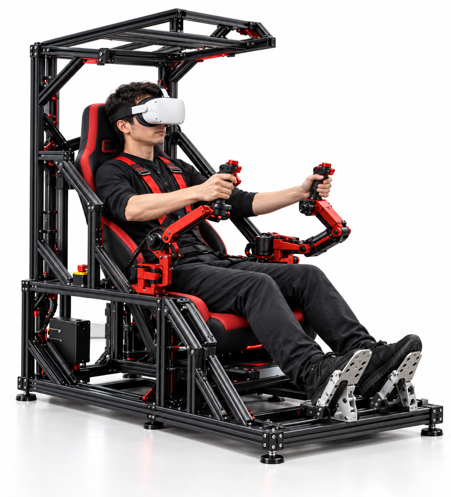
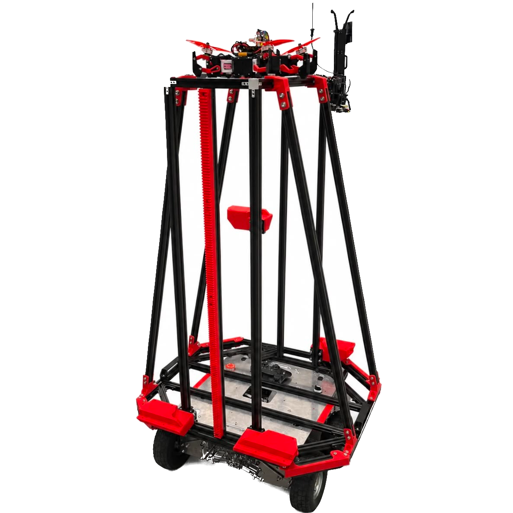
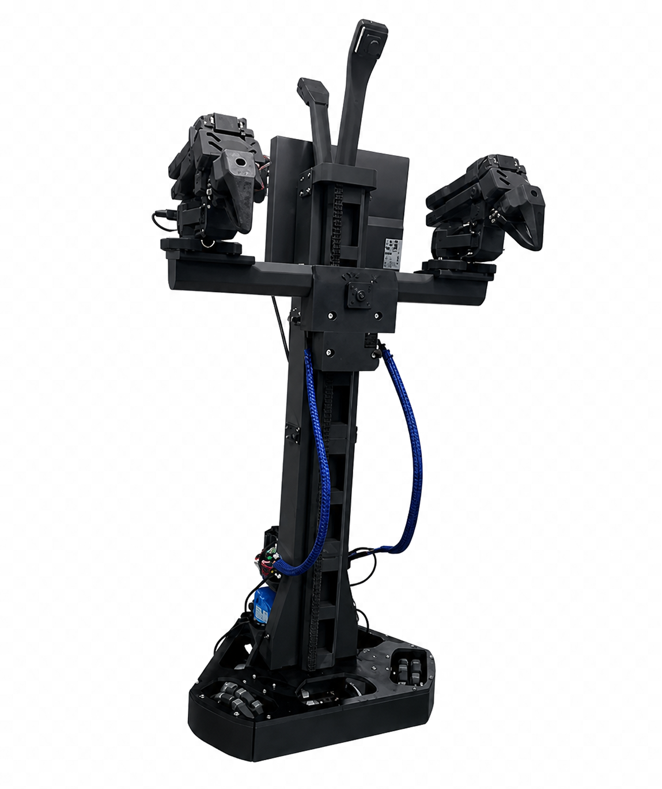

Operator cockpit
VR view, leader arms, pedals, and task selection.
ARGUS brings VR vision, leader arms, foot controls, live telemetry, and robot-specific adapters into one human-in-the-loop control system.
A research integration platform for safe teleoperation, supervised autonomy, and repeatable cross-robot workflows.

ARGUS separates the operator experience from robot-specific control. The cockpit stays familiar while each adapter handles the capabilities and limits of its machine.
VR view, leader arms, pedals, and task selection.
Authority, limits, routing, status, and safe-stop logic.
Translate common intent into platform-specific commands.
Video, telemetry, robot state, and operator handover.
Each platform has its own adapter folder, maintainer, setup notes, and validation record.

Large bimanual mobile manipulation platform.

Compact dual-arm mobile research robot.
Quadruped perception and inspection platform.
Open-source robotics and AI learning platform.
Biped platform for expressive embodied interaction.
Visual studies for multi-robot collaboration, immersive teleoperation, and operator handover. Select any image to enlarge it.
Drag to rotate, scroll to zoom, and switch platforms. These lightweight models communicate system layout; they are not fabrication drawings.
Every milestone should leave repeatable evidence: code, setup notes, safety limits, and an observable acceptance test.
Stable video, telemetry, battery, and connection state.
Clear control authority, motion limits, timeout, and stop behavior.
Validate the base and arms on defined supervised tasks.
Measure what can be reused when each new robot is connected.
Students work inside the cockpit or one robot adapter, document what they tested, and merge through review.